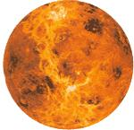

The evening star looks for daylight in front of the Sun.
Venus is always the brightest heavenly light after the sun and moon, but in February 2001 the planet will shine more brightly than usual and be visible for several hours after sunset. It will be so bright that you may be able to see it before sunset each night, and in the dark countryside, this bright planet will cast shadows on clear, moonless evenings.
In March, Venus will come around to the near side of its orbit toward Earth while also approaching our line of sight with the sun. This means that Venus will set progressively earlier each day. On March 1, Venus will disappear from view about three hours after sunset. But by March 22 Venus will set just 40 minutes after the sun. On March 30, Venus will set in tandem with the sun and pass just north of it; from that day on, the planet will rise well before the sun and be visible in the dawn sky.
If viewed through a small telescope or quality binoculars, Venus's departure from the evening sky in March can be all the more exciting. With optical aid you'll see an ever-longer but thinner crescent. (As the planet nears our line of sight with the sun we see more of its night side.) For more information on the chances of seeing Venus before sunrise and after sunset on the same day or of viewing the ashen light on the planet's night side, see the March issue of Sky & Telescope magazine, also available on the Web at www.skypub.com .
|
 |
|
|